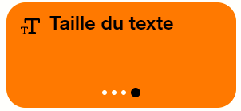

Orange Confort+ : une solution OpenSource pour améliorer le confort de tous et mettre en valeur les sites web accessibles !
Confort+ est une extension de navigateur qui facilite la lecture et la navigation dans les pages internet respectant les règles d’accessibilité. Elle permet de corriger l’affichage du texte, des boutons, des liens, mais aussi de la vocalisation et une navigation facilitée en proposant des boutons spécifiques, un gros pointeur de souris, un focus bien visible et des accès rapides à de nombreux réglages.
Confort+ est une extension de navigateur à télécharger gratuitement — disponible sur Firefox, Edge et Chrome.
Sur certains sites web, Confort+ est déjà installé. Dans ce cas, vous avez directement la pastille en mode « pause » affichée en haut à droite, comme c’est le cas sur ce site.
À qui s’adresse le service Orange Confort+
Le service Orange Confort+ a été créé par Orange. Il offre une aide importante aux utilisateurs ayant un handicap moteur, visuel ou cognitif (dyslexie par exemple), et améliore l’expérience utilisateur pour tous. Qui n’a pas souhaité en fin de journée pouvoir augmenter la taille des polices ou le contraste de couleur sur un site web ?
Notre démarche de conception centrée utilisateur repose sur le principe de conception universelle. Chacun peut adapter les réglages a ses besoins particuliers.
Présentation de Confort+
Confort+ propose plusieurs modes d’usage. Qu’est-ce qu’un mode d’usage ?
C’est un ensemble de réglages déjà configurés, prêt pour un utilisateur ayant un besoin bien précis.
Pour commencer, choisir son mode d’usage
Explorez les modes d’usages et choisissez celui qui vous convient le mieux en cliquant sur « Valider ce mode ».
Si vous hésitez entre deux, pas d’inquiétude, tous les réglages sont disponibles dans tous les modes d’usages. Vous pourrez donc affiner vos réglages personnalisés.
En revenant sur cet écran, vous pourrez également réinitialiser le mode d’usage.
Une fois le mode choisi, vous pouvez refermer la palette Confort+ en cliquant sur le double chevrons.
Pour rouvrir la palette, il suffira de cliquer sur la vignette représentant un être humain dans un cercle.
Pause
Certaines pages étant trop peu respectueuses des règles d’accessibilité, Confort+ fait alors plus de dégâts visuels que de bénéfices. Il est alors pratique de désactiver l’ensemble des réglages de Confort+ en une fois. Pour cela, appuyez sur le bouton « Pause ».
Les boutons multi-clics
Pour modifier les réglages, vous avez un accès rapide à une sélection via de gros boutons. Ces boutons peuvent être cliqués plusieurs fois d’affilée (3 ou 4 fois), les différents réglages seront alors mis en œuvre au sein de la page web.
Le premier réglage de chaque bouton (lorsque le point noir est le plus à gauche) est sans effet, il ne modifie pas la page en cours. C’est une façon d’annuler un des réglages.
Les réglages complets

En cliquant sur le bouton « Tous les réglages » en bas de la palette de l’accueil, vous pouvez accéder à l’ensemble des réglages disponibles dans tous les modes d’usages. La liste est longue et découpée en catégories (Texte, Affichage, Images, Audio, Navigation). Les boutons « Plus de choix » permettent d’accéder aux réglages avancés qui donnent encore plus de choix.
Les réglages avancés
Les réglages avancés permettent de naviguer au sein d’un choix encore plus large pour chaque réglage. Si vous choisissez un réglage qui n’est pas déjà présent dans le bouton multi-clic correspondant, il lui sera ajouté comme un 4ème choix personnalisé.
La mémorisation de vos réglages
Confort+ se souviendra de vos réglages pour chaque site web visité. Vous pourrez ainsi effectuer certains réglages pour une page et certains autres pour une autre page. Quand vous reviendrez sur ces sites, Confort+ mettra alors en place les bons réglages spécifiques à chaque page.
Téléchargement de l’extension
Nous proposons aujourd’hui deux versions de Confort+.
Version expérimentale (5.0.0 beta 2)
Cette dernière est disponible sous l’appellation nouvelle version.
Si vous choisissez d’installer cette version, nous vous invitons à nous remonter vos commentaires
par messagerie à confort.plus@orange.com :
l’objectif est d’améliorer la version grâce à vos commentaires.
Version antérieure (4.3.5)
Cette extension est toujours distribuée : consultez le site de la version 4.
Vous êtes développeur ?
Vous souhaitez intégrer Orange Confort+ dans vos pages ?
Le service est peu intrusif : il s’intègre sous forme d’un bouton (que nous nommons « pastille »).
Confort+ propose une amélioration de l’usage du site, mais ne corrigera pas un site ne respectant pas les règles d’accessibilité. Pour que Confort+ propose une solution optimale, votre site doit respecter les recommandations d’accessibilité WCAG 2.2 ou RGAA 4.1.2.
Lors de l’activation du service par un utilisateur, une palette de navigation s’affiche.
Dans votre site, l’ajout du service Orange Confort+ est réalisé par la simple inclusion d’un fichier JavaScript dans votre code HTML.
Le fichier JavaScript du service Orange Confort+ doit être hébergé sur un serveur. Ce serveur peut être celui de votre site, ou un serveur distant hébergé par un partenaire (sur un autre domaine). Si vous faites le choix d’utiliser un serveur distant hébergé par un partenaire, l’utilisateur du service Orange Confort+ retrouvera ses réglages sur tous les sites utilisant ce serveur.
L’accessibilité d’Orange Confort+
Orange Confort+ a fait l’objet d’un audit WCAG. Consulter la déclaration de conformité.